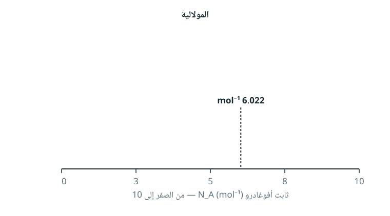

المولالية
Molality
المولالية هي عدد مولات المذاب في كيلوغرام واحد من المذيب، ورمزها b ووحدتها mol/kg. تُفضَّل على المولارية حين تتغير درجة الحرارة، لأن كتلة المذيب لا تتمدد كحجم المحلول.
المولالية هي كمية مادة المذاب مقسومة على كتلة المذيب بالكيلوغرام، ورمزها b ووحدتها mol/kg. وهي تختلف عن المولارية c التي تُقسم على حجم المحلول باللتر. سبب وجودها العملي أن كتلة المذيب لا تتغير بتغير درجة الحرارة، بينما حجم المحلول يتمدد فيتغير تركيزه المولاري مع الحرارة بلا أن يضاف أو يُزال مذاب. لذلك تُستعمل المولالية في الحسابات التي تعبر مدى حراريّاً واسعاً، كحسابات الارتفاع في درجة الغليان والانخفاض في درجة التجمد والضغط الأسموزي، حيث تكون العلاقات مكتوبة أصلاً على أساس كتلة المذيب. مثال: إذابة 0.500 مول من كلوريد الصوديوم في 2.000 كغ من الماء تعطي مولالية 0.250 mol/kg، وهي نفسها لو سخّنّا المحلول من 20 °م إلى 80 °م، بينما تتغير مولاريته لأن الحجم تمدد.
كيف تعمل الظاهرة؟
المولالية تُبنى على ميزان لا على مخبار: تُوزن كتلة المذيب مباشرة، ويُحسب عدد مولات المذاب من كتلته وكتلته المولية، ثم يُقسم العدد على الكتلة بالكيلوغرام. ولأن الكتلة خاصية محفوظة لا تتأثر بالتمدد الحراري، فإن mol/kg مقياس ثابت عبر مدى حراري واسع. أما المولارية فتُبنى على حجم يُقاس عند درجة معينة، ويتمدد المحلول بمعامل تمدد حراري للمذيب أساساً، فينخفض التركيز المولاري عند التسخين بلا تغيّر في كمية المذاب. هذا الفرق هو ما يجعل الخواص التجمّعية — الارتفاع في الغليان والانخفاض في التجمد — تُكتب بدلالة المولالية: فهي تتناسب مع عدد الجزيئات المذابة في كتلة معينة من المذيب، لا في حجم متغير.
العلاقة بالأرقام
b = n₂/m₁ بوحدة mol/kg، حيث n₂ عدد مولات المذاب وm₁ كتلة المذيب بالكيلوغرام. والعلاقة بالمولارية: c = b·ρ/(1 + b·M₂) حيث ρ كثافة المحلول وM₂ الكتلة المولية للمذاب بالكيلوغرام لكل مول. والعلاقة بالكسر المولي x₂: b = x₂/(x₁·M₁) حيث M₁ الكتلة المولية للمذيب بالكيلوغرام لكل مول. مثال عددي: 0.500 مول NaCl في 2.000 كغ ماء = 0.250 mol/kg؛ وكتلة المذيب 2.000 كغ تساوي 2.006 L عند 25 °م بكثافة 0.997 047 kg/L، فالمولارية 0.500/2.006 = 0.249 mol/L — فرق 0.4% عند هذه الدرجة وحدها.
مفاهيم متقاربة
المولالية والمولارية تتفقان في البسط وتختلفان في المقام: مذيب مقابل محلول، وكتلة مقابل حجم. والنتيجة أن المولالية لا تتغير بالحرارة والمولارية تتغير. ويُخطئ من يكتب «m» للمولارية أو «M» للمولالية: الاصطلاح الشائع M للمولارية وm للمولالية، وكلاهما يُقرأ خطأً في النصوص المترجمة. والكسر المولي نسبة بلا وحدة ولا يجوز إعطاؤه وحدة mol/kg. وأخيراً المولالية تُنسب إلى المذيب وحده، فمحلول بمذيبين لا تكون له مولالية واحدة بل واحدة لكل مذيب.
حدود التطبيق
المولالية غير معرّفة حين لا يوجد مذيب مميّز، كما في السبائك والخلائط الصلبة المتجانسة. وفي المحاليل شديدة التخفيف يصبح الفرق بينها وبين المولارية أصغر من دقة القياس، فيُستعملان بالتبادل بلا ضرر عملي — لكن ذلك تقريب لا تعريف. ولا تُستعمل المولالية لوصف تراكيز الغازات، فمقياسها كتلة سائل. وتفقد المولالية معناها حين يتفاعل المذاب مع المذيب فيتغير عدد الجزيئات المذابة فعلياً، كما في تفكك الأملاح أو تكوّن معقدات، فيلزم التمييز بين المولالية الاسمية والمولالية الفعلية.

| الكمية | القيمة | المصدر |
|---|---|---|
| كثافة الماء السائل عند 25 °م | 997.00 kg/m³ | [3] |
| الحجم النوعي للماء السائل عند 25 °م | 1.003 01 cm³/g | [3] |
المصادر
- 1 The International System of Units (SI), 9th edition (2019) — BIPM — Bureau International des Poids et Mesures (2019). www.bipm.org/en/publications/si-brochure · اطُّلع عليه 2026-11-21
- 2 CODATA Value: Avogadro constant — NIST — CODATA 2022 recommended values (2024). physics.nist.gov/cgi-bin/cuu/Value?na · اطُّلع عليه 2026-11-21
- 3 NISTIR 5078 — Thermodynamic Properties of Water, 0 to 374 C and Pressures to 100 MPa (IAPWS-95 tabulation) — NIST — National Institute of Standards and Technology (1998). www.nist.gov/publications/thermodynamic-properties-water-temperatures-0-374-c-and-pressures-100-mpa · اطُّلع عليه 2026-11-21
استشهد بهذا المصطلح
الصيغتان مبنيتان من بيانات الصفحة نفسها: العنوان والتاريخ ورابط النسخة المنشورة.
المولالية — Molality. (2026). ديوان المعرفة — انفراد. https://infiradev.com/diwan/terms/term-molality.html
@misc{term-molality2026,
title = {المولالية},
titleaddon = {Molality},
howpublished = {{ديوان المعرفة — انفراد} — مرجع علمي عربي},
year = {2026},
url = {https://infiradev.com/diwan/terms/term-molality.html},
urldate = {2026-11-26},
note = {مراجعة علمية: hermes (مراجعة معتمدة 2026-11-26)}
}
راجعه: hermes (مراجعة معتمدة 2026-11-26) · 2026-11-26 · آخر تحديث 2026-11-21